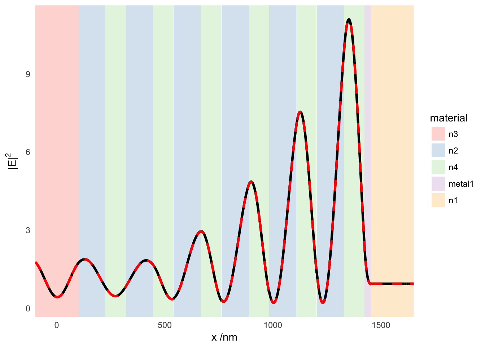

baptiste Auguié – 23 February, 2017
The internal electric field can be calculated with two different codes; here we check that the results are consistent.
library(planar)
library(ggplot2)
require(reshape2)
require(plyr)Simulation of the optical response of a thin gold film deposited onto a Bragg mirror, with incidence at 5 degrees and p-polarisation. The sum of \(M_{par}\) and \(M_{perp}\) gives \(\left|\mathbf{E}\right|^2\)
psi <- 0
angle <- 5*pi/180
# require(tamm)
# struct <- tamm_stack(wavelength = 704,
# lambda0=650, N=6, incidence = "left",
# nH = 1.7, nL = 1.3, dm = 28,
# nleft = 1.5, nright = 1.0)
struct <- structure(list(epsilon = list(2.25, 2.25, 1.69, 2.89, 1.69, 2.89,
1.69, 2.89, 1.69, 2.89, 1.69, 2.89,
1.69, 2.89, -16.66+1.11i,1, 1),
wavelength = 704,
thickness = c(0, 100, 125, 95.6, 125, 95.6, 125, 95.6,
125, 95.6, 125, 95.6, 125, 95.6, 28, 100, 0),
angle = 0,
polarisation = "p"), .Names = c("epsilon", "wavelength",
"thickness", "angle", "polarisation"))
comp <- lfief(wavelength = struct$wavelength,
angle = angle,
polarisation = "p",
thickness = struct$thickness,
dmax = 100, res = 100, res2=1e3,
epsilon = struct$epsilon, displacement = FALSE)
d1 <- subset(comp, variable == "M.perp")
d2 <- subset(comp, variable == "M.par")
d1$sum <- d1$value + d2$value
res <- internal_field(wavelength=struct$wavelength, angle=angle, psi=psi,
thickness = struct$thickness,
dmax=100, res=1e3,
epsilon=unlist(struct$epsilon),
field = FALSE)
limits <- ddply(d1, .(L1), summarize, material=unique(material),
xmin=min(x), xmax=max(x), xmid=mean(x), ymin=-Inf,
ymax=Inf)
limits2 <- ddply(res, .(id), summarize, material=unique(material),
xmin=min(x), xmax=max(x), xmid=mean(x), ymin=-Inf,
ymax=Inf)
ggplot(d1) +
geom_rect(data=limits, alpha=0.5, colour=NA,
aes(xmin=xmin, xmax=xmax, ymin=ymin, ymax=ymax,
fill=material))+
geom_line(aes(x, sum), lwd=1.2) +
geom_line(data=res, aes(x, I), colour="red", lwd=1.2,linetype="dashed") +
theme_minimal() + theme(panel.grid.major=element_blank(),
panel.grid.minor=element_blank()) +
guides(fill = guide_legend(override.aes=list(size=1)))+
scale_x_continuous("x /nm",expand=c(0,0)) +
scale_y_continuous(expression("|E|"^2)) +
scale_fill_brewer(palette="Pastel1")